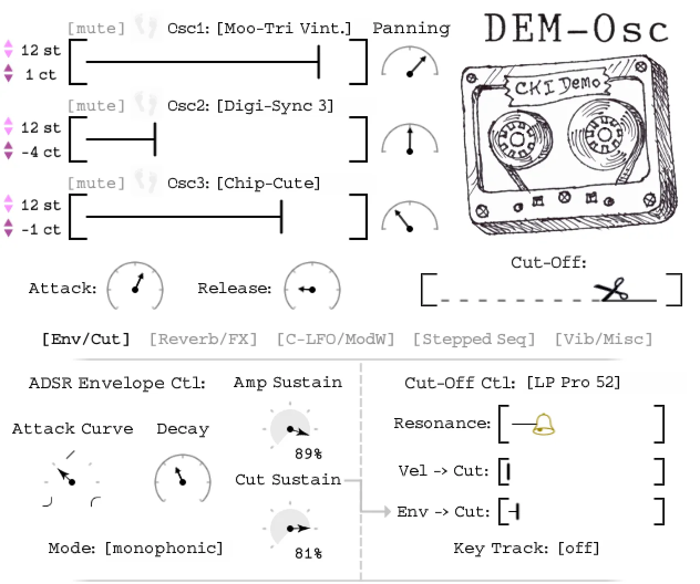

Lado ATu computadora
El plugin
VST3 y AU · Mac
- La versión más nueva
- Descárgalo, arrástralo a tu carpeta de plugins y a tocar
- Sin software extra, sin cuenta
Es gratis. Ahora solo queda tocar.
Cinco osciladores con calidez de cinta, cuatro espacios de convolución y veinticinco presets que ya suenan terminados. Un sintetizador nativo para tu DAW.
Descarga inmediata · Mac · VST3 · AU. ¿Usas Windows? Consíguelo en Kontakt
Funciona en el Kontakt Player gratuito, Mac y Windows. ¿Usas Mac? Consigue el plugin
¿Estás en el teléfono? Es el mismo botón. Completa la compra gratis y te enviamos por correo el enlace de descarga, para que te esté esperando cuando vuelvas a tu computadora.
Seis sonidos, directo de DEM-Osc: sub bajo, pad cristalino, teclado eléctrico, lead cantarín, cuerdas exuberantes y metales brillantes. Toca la cinta para recorrerlos, o elige uno:
Toca un sonido. Se reproduce en streaming, no hay nada que descargar.
DEM-Osc toma un oscilador de cada sintetizador de nuestra Osc Collection (diente de sierra, triangular, cuadrada, sync y chip) y apila tres a la vez a través de cuatro espacios de convolución hechos a mano. Desafínalos, deja que cada voz se desvíe un poco y se funden en algo cálido y vivo.

Gira una perilla y escucha cómo se mueve. Deslízate entre notas, agrega un poco de vibrato, juega con la rueda de modulación, deja que cada voz se desafine apenas. Está hecho para tocarse, no para configurarse.
El plugin es el DEM-Osc más nuevo, hecho para Mac. La versión para Kontakt es la original, y también funciona en Windows, en el mismo reproductor gratuito que el resto de la Osc Collection.
Lado ATu computadora
VST3 y AU · Mac
Lado BTu computadora
Kontakt Player · Mac y Windows
Sí. Es tuyo para siempre, sin periodo de prueba y sin límite de tiempo. Algunos de los efectos más profundos están reservados para la Osc Collection de pago, y DEM-Osc es la puerta de entrada gratuita.
Hay dos versiones, y las dos son gratis. El plugin es VST3 y AU para macOS. La versión para Kontakt funciona en el Kontakt Player gratuito en Mac y Windows, y la agregas en Native Access con el número de serie que te enviamos por correo.
Cinco osciladores vintage muestreados de hardware real, cuatro espacios de reverb por convolución y 25 presets hechos a mano, con glide, vibrato y asignación a la rueda de modulación.
Cuando quieras los otros cuatro osciladores, ya sabes dónde encontrarnos.
El plugin para Mac: se agrega a tu carrito, solo pon tu correo y completa la compra. ¿Usas Windows? Consíguelo en Kontakt, o explora la Osc Collection completa.
La versión para Kontakt, Mac y Windows: se agrega a tu carrito, solo pon tu correo y completa la compra. ¿Usas Mac? Consigue el plugin, o explora la Osc Collection completa.
DEM-Osc está hecho por Clay and Kelsy Instruments, nuestra pequeña y adorable empresa de software. Creamos los instrumentos y las herramientas que necesitamos para seguir produciendo música. Nuestra música se ha reproducido más de 2 millones de veces, y nuestros instrumentos se han descargado más de 10,000 veces.